Lernen beim Spielen von (Lern)Spielen.
Hier werden verschiedene Spiele vorgestellt, die (unserer Meinung nach) in den Schulen eingesetzt werden können.
Beim GAMEN lernen
Übersicht: Beim Gamen lernen
Die grosse Liste möglicher Spiele für den Unterricht – mit Themen, Fächern und Zyklen.
Spieleliste
Alte Spieleliste
Zyklus: Z1–Z3 · #: provisorische Empfehlung (1 = bedingungslos empfohlen, 2 = kann herausfordernd sein, 3 = nur bedingt empfohlen) · «Gamifizierung» = Lernapps mit Funktionen aus Games, aber keine richtigen Spiele.
| Bild | Titel | Thema | Mögliche Fächer | Zyklus | # | Kommentar | Link |
|---|---|---|---|---|---|---|---|
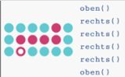 | Compute It (Toxicode) Zusatzinformationen | Programmierkonzepte üben (Learning by doing) | MI | Z2 Z3 | 1 | Sofort losspielen | Webseite |
| Escape Fake Zusatzinformationen | Fake News aufdecken | MI Geschichte | Z2 Z3 | 1 | AR am Smartphone/Tablet | Webseite App Store | |
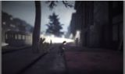 | When We Disappear Zusatzinformationen | Verfolgung von jüdischen Menschen | Geschichte | Z3 | 1 | Erst in der Erprobungsphase (Stand November 2023) | Webseite |
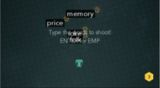 | ZType Zusatzinformationen | Tastaturschreiben üben | Deutsch Englisch MI | Z2 Z3 | 1 | Sofort losspielen Ähnliche wie: Touch Type Tale, Epistory | Webseite |
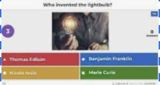 | Kahoot | Quiz | Alle Fächer | Z2 Z3 | 1 | Gamifizierung | Webseite |
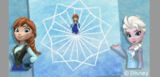 | Code.org | Programmieren lernen (Blockly) mit gamifizieren Inhalten (Spiele nachprogrammieren). | MI | Z2 Z3 | 1 | Webseite | |
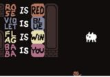 | Baba Is You Zusatzinformationen | Logisches Denken Sprache | MI Sprache | Z2 Z3 | 1 | Kann auf dem iPad gespielt werden. Schnell recht komplex. Gefahr, Lösungen im Internet nachzuschauen. | Webseite |
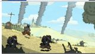 | Valiant Hearts: The Great War Zusatzinformationen | Krieg, 1. Weltkrieg | Geschichte | Z2 Z3 | 1 | PEGI-12 Ähnlich: This War Of Mine, Through The Darkest Of Times, Warsaw | Webseite Unterrichtsmaterialien |
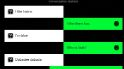 | Human or Not | Chatte zwei Minuten lang um herauszufinden,ob du mit einem Menschen oder einer KI geschrieben hast. | MI Sprache Fremdsprachen | Z2 Z3 | 1 | Sofort losspielen | https://humanornot.so/ |
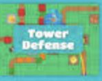 | Blooket | Quiz + kleine Spiele (als Belohnung). Sehr ähnlich wie Kahoot | Alle Fächer | Z2 Z3 | 2 | Gamifizierung Achtung: Spiel als Belohnung, Lernen als Hindernis. | Webseite |
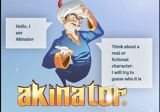 | Akinator | Personen mit Fragen erraten. Binärer Suchbaum. Funktioniert auch mit Tieren und Objekten | MI Fremdsprachen | Z2 Z3 | 2 | Sofort losspielen Eindrückliche Demonstration davon, wie schnell etwas mit binären Fragen gefunden werden kann. | Webseite |
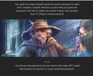 | Gandalf | Prompting üben, indem einer KI (Gandalf) ein Passwort entlockt werden muss. | MI Sprache | Z2 Z3 | 2 | Sofort losspielen Recht komplex ab Level 3-4 | Webseite |
| Assassins Creed: Discovery Tour Zusatzinformationen | Antikes Griechenland, antikes Ägypten oder Zeitalter der Vikinger im Spiel erleben | Geschichte Sprachen | Z3 | 2 | Discovery Tour ohne Altersbeschränkung (Hauptspiel USK 18) Achtung: Die Zeitepochen eignen sich gemäss LP21 kaum für Zyklus 3 | Webseite Unterrichtsmaterialien | |
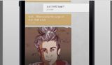 | Begrabe mich, mein Schatz | Flucht | Geschichte | Z3 | 2 | Verschiedene Plattformen: iPhone/iPad, Android, Steam, Switch | Webseite App Store |
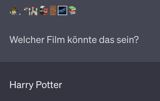 | ChatGPT | Textbasierte Spiele | Deutsch Fremdsprachen | Z2 Z3 | 2 | Die Prompts funktionieren noch nicht immer (siehe Zusatzinformationen auf edugaming.ch) | |
| GeoGuessr | Geografische Orte erkennen | Geografie | Z2 Z3 | 2 | Webseite | ||
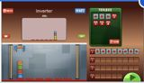 | Cargo-Bot | Logik üben, kleine Programme schreiben. | MI | Z2 Z3 | 2 | Sofort losspielen | Webseite AppStore |
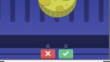 | Cheesemaster | Datenschutz - Welche Informationen können über den Browser ausgelsen werden? | MI | Z3 | 2 | Experiment des SRF aus dem Jahr 2018 | Webseite |
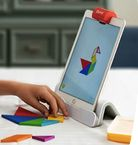 | Osmo Zusatzinformationen | Spielerisches Lernen (Zangram, Zahlen, Programmieren usw.) | MI Sprachen Mathematik | Z1 Z2 Z3 | 2 | Zusatzhardware benötigt. | Webseite |
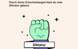 | Deine Insel | Gesetze für eine eigene Insel bestimmen | Geschichte | Z2 Z3 | 2 | Sehr textlastig | Webseite |
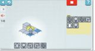 | LightBot | Logik üben, kleine Programme schreiben. | MI | Z1 Z2 Z3 | 2 | Nur auf Smartphones/Tablets spielbar | Webseite |
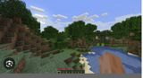 | Minecraft | Welten aufbauen | BG Fremdsprachenunterricht | Z2 Z3 | 2 | Webseite | |
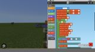 | Minecraft: Education Edition | Programmieren lernen (makeCode) Inklusive fächer- übergreifende Inhalte | MI Verschiedene Fächer | Z2 Z3 | 2 | Mit programmierbaren Bot. Mit "Teacher-Tools". 5$ - 12$ pro Konto pro Jahr | Webseite |
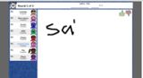 | Skribbl.io | Zeichnen Wörter erraten | BG Fremdsprachen | Z2 Z3 | 2 | Eigene Begriffe verwenden und in der (geschlossenen) Klasse spielen | Webseite |
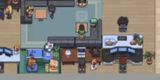 | Gather Town | Videokonferenzsoftware mit gamifizierten Gruppenfindung (Figur in Welt herumbewegen) | Fremdsprachen | Z3 | 2 | Für Lehrpersonen geeignet Gamifizierung | Webseite |
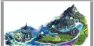 | Classcraft | Klassenmanagement. Die Schüler:innen besitzen einen Avatar, den sie mit guten Leistugen verbessern. | Alle Fächer | Z2 Z3 | 2 | Ehemals: World of Classcraft | Webseite |
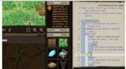 | Code Combat | Programmieren lernen (Python, JavaScript) | MI | Z3 | 2 | Webseite | |
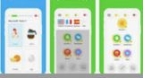 | DuoLingo | Fremdsprache Lernen | Sprachen | Z2 Z3 | 2 | Gamifizierung | Webseite |
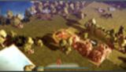 | Epistory | Tastaturschreiben üben | Deutsch Englisch MI | Z2 Z3 | 3 | Ähnliche wie: Touch Type Tale, ZType | Steam |
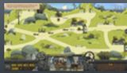 | Touch Type Tale | Tastaturschreiben üben | Deutsch Englisch MI | Z2 Z3 | 3 | Ähnliche wie: Epistory, ZType | Steam |
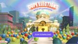 | Dope Elections - Race of champions | Politische Bildung. Speierische Vergleich mit Spider-Diagramm von Politiker:innen. | NMG, RZG, Geschichte, Allgemeinbildung | Z3 | 3 | Inhalte auf Wahlen 2023 limitiert | Webseite |
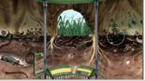 | Bodenreise | Leben im Boden kennenlernen | Biologie | Z1 Z2 | 3 | Webseite | |
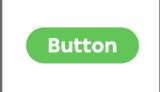 | Click Click Click | «Interaktion mit einer Webseite». Achievements verfolgen. | MI | Z3 | 3 | Sofort losspielen Nur auf Englisch | Webseite |
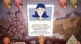 | Foodscape | Entscheidungen treffen. Ressourcen, Umwelt, Zufriedenheit | Allgemeinbildung | Z3 | 3 | Webseite Unterrichtsmaterialien | |
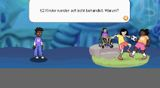 | Kidimo - Die Kinderrechte-App | Situationsanalyse für Kinder mit anschliessenden Fragen | Allgemeinbildung | Z2 | 3 | Webseite LP-Materialien | |
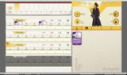 | Moneyfit | Umgang mit Finanzen | Mathematik | Z2 Z3 | 3 | Webseite | |
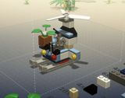 | Lego Bricktales Zusatzinformationen | Eintauchen in virtuelle Welten. Virtuelles Bauen | MI | Z2 Z3 | 3 | Kaum für den Unterricht geeignet | Webseite |
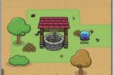 | GimKit | Quiz | Alle Fächer Mathematik (Fischfang-Spiel) | Z2 Z3 | 3 | Gamifizierung | Webseite |
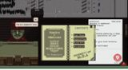 | Papers Please | Immigration | Geschichte | Z3 | 3 | USK 12 | Webseite |
Fehlen hier Einträge?
Sende eine Mail an adrian.degonda@phzh.ch, um einen Zugang zu erhalten und die Liste selbst ergänzen zu können.